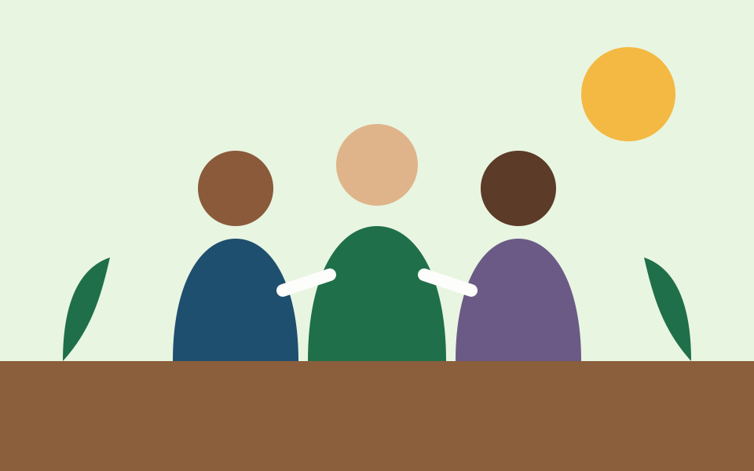

Missão
Promover o desenvolvimento integral de comunidades em situação de vulnerabilidade social.
Cultivamos oportunidades para crianças, jovens e famílias da periferia de São Paulo por meio da educação, da segurança alimentar e da inclusão digital.

Fundado em 2015 por moradores do bairro, o Instituto Raízes do Amanhã é uma organização da sociedade civil sem fins lucrativos. Atuamos onde o poder público ainda não chega, com o apoio de voluntários, doadores e parceiros locais.
Promover o desenvolvimento integral de comunidades em situação de vulnerabilidade social.
Ser referência em transformação social comunitária na zona sul de São Paulo até 2030.
Transparência, respeito à diversidade, protagonismo comunitário e compromisso com resultados.
Doe algumas horas por semana em aulas de reforço, oficinas de tecnologia ou no cuidado da horta.
Contribuições mensais garantem material escolar, sementes e a manutenção dos computadores do laboratório.